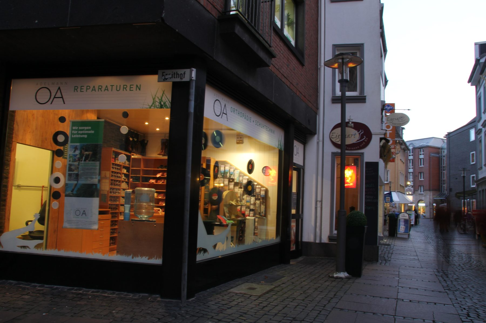

Einlagen
Orthopädische Einlagen beeinflussen den ganzen Körper. Modernste Computertechnik verbunden mit handwerklichem Können, für Entlastung im Alltag.
Mehr erfahren →
Orthopädie-Schuhtechnik aus Leidenschaft. Maßgefertigte Einlagen, Schuhe und Zurichtungen, entwickelt im Herzen von Neuss, direkt neben der Quirinus-Basilika.

Wir glauben: gute Versorgung beginnt mit Zuhören und endet erst, wenn der Schuh sitzt. Traditionelles Handwerk und moderne Analyse, vereint unter einem Dach in Neuss.
Vier Kernleistungen, entwickelt, vermessen und gefertigt unter einem Dach in der Krämerstraße 15.
Orthopädische Einlagen beeinflussen den ganzen Körper. Modernste Computertechnik verbunden mit handwerklichem Können, für Entlastung im Alltag.
Mehr erfahren →Kommen Sie zu uns ins Geschäft. Unser gesamtes Wissen stellen wir Ihnen zur Verfügung und fertigen Ihre neuen Maßschuhe nach Ihren Vorstellungen.
Mehr erfahren →Ob Schmetterlingsrolle, Ballenrolle, Sohlenranderhöhung oder Schuherhöhung. Wir beraten Sie bestmöglich und setzen Ihre Wünsche präzise um.
Mehr erfahren →Mit modernen Analyseverfahren erkennen wir drohende Überlastungen und Fehlhaltungen frühzeitig, für eine optimale Versorgung.
Mehr erfahren →Sechs Generationen Schuhmacherhandwerk, unzählige Kundinnen und Kunden. Jede Versorgung so individuell wie ein Fußabdruck.
Sie kommen in unsere Werkstatt, schildern Ihre Beschwerden und Ziele. Wir hören zu, bevor wir messen. Für Maßschuhe vereinbaren wir vorab einen persönlichen Termin.
3D-Scan und klinische Prüfung. Auf dieser Basis entwickeln wir die passende Versorgung.
Wir fertigen in unserer Werkstatt, passen an Ihrem Fuß an und bleiben nach der Übergabe Ihr Ansprechpartner.
Originalbewertungen aus unserem Google-Unternehmensprofil. 4,7 von 5 Sternen.
Sehr, sehr nett! Macht einen sehr kompetenten Eindruck. Man braucht nicht extra einen Termin vorher und meine Einlegesohlen kann ich bereits nach einer Woche abholen. Ich bin begeistert und kann eine 100 prozentige Empfehlung aussprechen!
Klein aber Fein. Tolle freundliche Atmosphäre, alles sehr professionell! Spitzen Vater/Sohn Zusammenarbeit mit perfektem Ergebnis. ABSOLUTE EMPFEHLUNG…
Ich bin sehr zufrieden. Die Einlagen passen hervorragend und man wird sehr freundlich bedient.
Ich habe schon auf Grund von Umzügen immer mal wieder andere Geschäfte ausprobiert und komme immer wieder zurück zu Adelmann, weil der Service und die Leistungen einfach top sind.
Neben dem Kardinal-Frings-Denkmal an der St. Quirinus-Basilika. Krämerstr. 15, 41460 Neuss.

Schreiben Sie uns oder rufen Sie an. Wir beraten Sie persönlich in unserer Werkstatt in der Krämerstraße 15.
Kontakt aufnehmen →